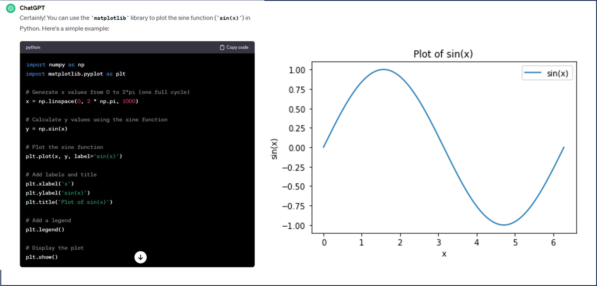

This course is supposed to be self contained, but there are of course plenty of online courses, youtube videos, and books that you should take advantage of to improve your understanding. These resources are extremely valuable if you know exactly what your are looking for. As a complete beginner with little or no knowledge of Python it can be confusing if you do not know what you are looking for. Great online sources that cover much of Python basics are
These resources explains quite briefly important concepts and give examples, such as
I would also like to highlight Real Python. Real Python is comprehensive, it offers different learning paths from python basics, to machine learning with python. Whenever I want to understand certain Python concepts in depth, I often end up at Real Python, I find it to be precise and not too lengthy.
ChatGPT, developed by OpenAI is perhaps one of the best online sources to help you write code. So far all the examples in this course can be generated from ChatGPT. Just type in ''Show me how to plot sin(x) in Python'', you will get the output in figure 1.
Figure 1: Output from ChatGPT and the result after running the code.

I would encourage you to use ChatGPT actively in your coding, you will be more efficient. The code generated is generally good, and if there are parts you do not understand it is possible to get additional help from ChatGPT.